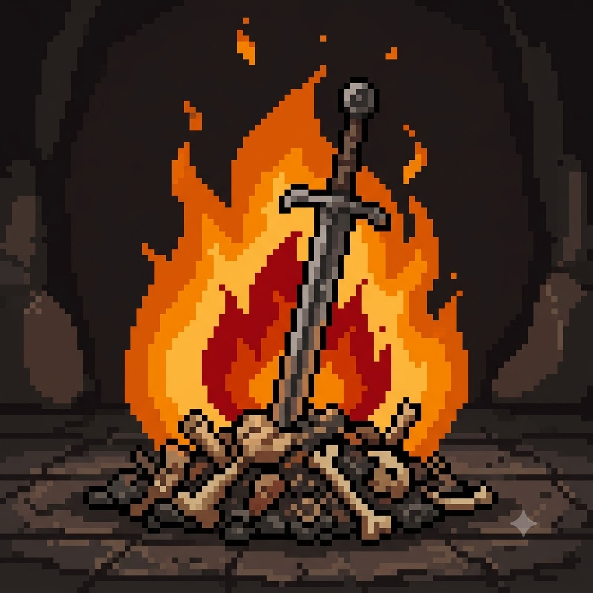
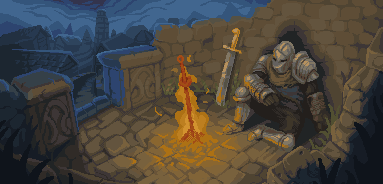

"El camino es largo y las cenizas se enfrían. Pero aún queda un refugio por descubrir."
Desciende al abismo
La oscuridad te rodea
Sigue bajando... el fuego aguarda.

¡Feliz cumpleaños, Max! Has superado incontables desafíos este año, pero finalmente has encontrado un lugar seguro para descansar. Que esta hoguera renueve tus estamina, cure tus heridas y te prepare para los grandes niveles que están por venir. Nunca olvides lo orgulloso que estoy de ti y el gran potencial que tienes, estoy seguro de que vas a hacer grandes cosas. ¡Gracias por ser un amigo y compañero de viaje excepcional en esta aventura llamada vida!
